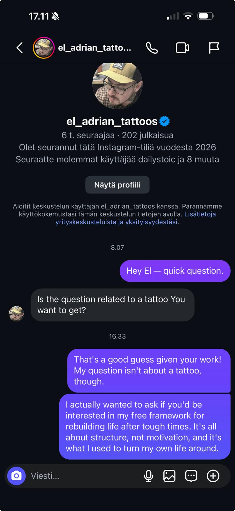
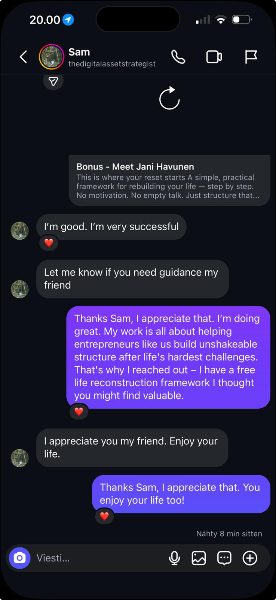
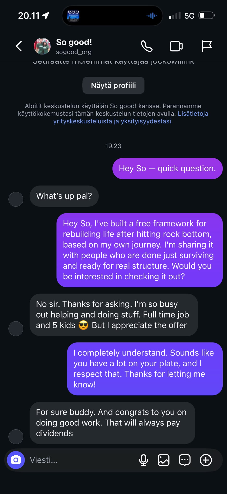
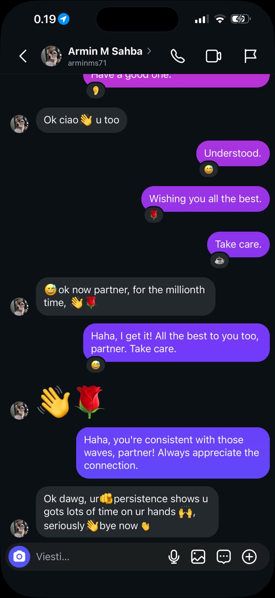
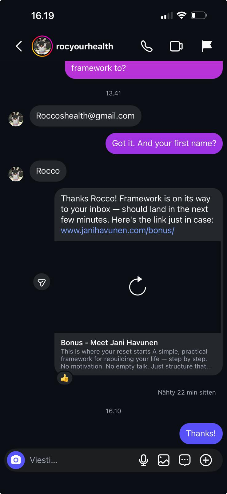

FounderFlow — AI Client Acquisition System.
Instagram outreach on autopilot.
FounderFlow finds your ideal clients on Instagram, sends personalized DMs, handles replies with AI, and books calls — all automatically. You just show up to the meetings.
How FounderFlow Works
Three engines working together to turn cold Instagram leads into booked calls.
Lead Discovery
Finds potential clients in your niche by searching Instagram, Skool, and other platforms. Filters by relevance so you're only reaching out to people who actually need what you offer.
DM Automation
Sends personalized opening DMs at a safe, human-like pace (50-75/day). Follow-ups go out automatically to leads who haven't replied — no manual work required.
AI Setter
When leads reply, an AI assistant handles the conversation naturally. It answers questions, handles objections, detects buying intent, and sends your Calendly link when they're ready.
See the Dashboard in Action
A walkthrough of the FounderFlow command center — where you monitor leads, DMs, replies, and booked calls in real time.
The Pipeline
We find. We engage. We qualify. You close.
Acquisition
System
Discovery
Filtering
Outreach
Detection
(Qualifies Lead)
Sequence
Prospect
Booking
Conversation
Client
Real Results
Actual DM conversations and replies generated by FounderFlow.





What Clients Say
Real feedback from founders running FounderFlow every day.
I have been using FounderFlow for my coaching business, and it has performed exactly as expected. The system finds the right people, sends personalized messages, and handles replies without me lifting a finger. What has impressed me the most is how natural the AI conversations sound — my leads genuinely think they are talking to me. I can confidently say this has transformed how I attract new clients.
I was spending hours every day sending DMs with almost no replies. A friend told me about FounderFlow and I was skeptical at first — I had tried automation tools before and they always got my account flagged. The warmup mode and human-like pacing won me over. My pipeline fills up automatically now and I just show up to the calls that matter.
I run two different outreach campaigns through FounderFlow — one for my course launch and one for affiliate partnerships — and both just work. The AI Setter trained on my brand voice in an afternoon, and the follow-up sequences catch leads I would have lost track of. Every question I have had since launch was answered within a few hours by the team.
Simple, Transparent Pricing
No hidden fees. No surprises. Two plans that scale with your outreach.
Implementation
Everything you need to launch your automated outreach system.
- Full system setup & deployment
- AI DM engine configured for your niche
- AI auto-responder trained on your brand
- Follow-up sequences built & tested
- Pipeline CRM with live funnel tracking
- Dashboard access with real-time analytics
- Onboarding call & walkthrough
Growth Plan
Ongoing support, lead generation, and performance optimization.
- Automated lead harvesting (new leads daily)
- Monthly performance reports & analytics
- 24/7 priority support & troubleshooting
- Engine updates & optimization patches
- AI reply tuning & persona refinement
- Warmup management for new accounts
- Dedicated success manager
Getting Started
Three steps from manual outreach to fully automated.
Book a Call
15-minute conversation to understand your niche, goals, and whether FounderFlow is the right fit. No pitch deck, no pressure.
We Set Everything Up
FounderFlow is configured for your Instagram account, your niche, and your opening message. The AI Setter is trained on your persona and offer.
Show Up to Calls
The engine runs 24/7 — finding leads, sending DMs, handling replies, booking calls. You just check the pipeline and show up to meetings.
FounderFlow vs The Alternatives
How FounderFlow stacks up against GHL, Manychat, manual outreach, and hiring a VA.
| Feature | FounderFlow | GHL | Manychat | Manual DMs | Hiring a VA |
|---|---|---|---|---|---|
| Lead discovery | Automated | Import / Manual | Inbound Only | Manual search | Manual search |
| DM sending | 50-75/day auto | No cold outreach | No Cold Outreach | 20-30/day manual | 30-50/day |
| Reply handling | AI auto-replies | Basic chat widget | Rigid Keyword Menus | You reply manually | VA replies (needs training) |
| Follow-ups | Automatic | Workflow triggers | Time-based Triggers | Easy to forget | Inconsistent |
| Call booking | AI sends Calendly | Built-in calendar | Clickable Buttons | Manual back-and-forth | Manual back-and-forth |
| CRM pipeline | Built-in | Full CRM | Basic Tags | Spreadsheets | Spreadsheets |
| Runs 24/7 | Yes | Landing pages only | If they message first | Only when you work | 8h/day max |
| Time required from you | ~15 min/day | Hours setting up | Hours building flows | 2-3 hours/day | 1-2 hours/day managing |
| Monthly cost | Software fee | $97-$497/mo | $15-$25/mo | Free (your time) | $500-$2,000+/mo |
| Scales beyond 100 DMs/day | Add accounts | No cold outreach | Inbound Only | Impossible alone | Need more VAs |
| Live support & customer care | Direct founder access | Email / chat support | Bots / Tickets | You're on your own | VA manages themselves |
Common Questions
Is this safe for my Instagram account?
Yes. FounderFlow runs on a real browser session (not a bot farm), sends 50-75 DMs per day with human-like delays, and includes warmup mode for new accounts. The engine also detects action blocks and pauses immediately if Instagram flags anything.
Does the AI actually sound human?
The AI Setter is trained on your persona — your tone, your product, your angle. It generates every reply fresh (no templates), asks questions to keep conversations moving, and only sends your calendar link when someone shows genuine interest.
What niches does this work for?
FounderFlow works for any personal brand on Instagram — coaches, fitness professionals, consultants, real estate agents, creators, therapists, musicians, and small business owners. If you sell something and your clients are on Instagram, it works.
How much time does this save?
Most founders spend 2-3 hours a day on manual outreach. FounderFlow reduces that to about 15 minutes — just checking your pipeline and showing up to booked calls.
Do I need technical skills to use this?
No. You download the connector, log into your Instagram through it, and it securely uploads your session to our server. The engine runs from there — you just monitor results on the dashboard. Everything is shown in plain English: leads found, DMs sent, replies, calls booked.
Ready to automate your outreach?
Create your workspace in 60 seconds. Pre-loaded leads, AI replies, and 24/7 DM automation — all done for you.